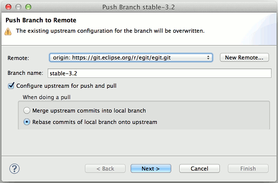
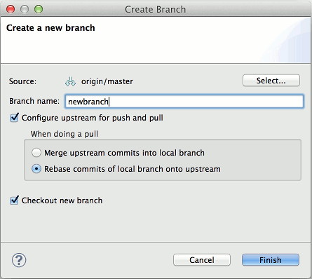

Interactive rebase allows to quickly edit a series of commits
Support for configuration option rebase.autostash. Automatically create a temporary stash before a rebase operation begins, and apply it after the operation ends. This means that you can run rebase on a dirty worktree. However, use with care: the final stash application after a successful rebase might result in non-trivial conflicts.
Add dropping multiple stashed commits in repositories view, select multiple stashes and click "Delete Stashed Commits..."
Push Branch / Initial Push wizard simplifies pushing a branch and also allows upstream configuration for new branches created by the push operation

Push Tags wizard simplifies pushing one or multiple tags
Improve UI of upstream configuration when creating a branch

Blame annotations: Add link for showing commit in history and open
Blame annotations: Show start commit when opening editor
Blame annotations: Show diff in hover and enable blaming parent commits
PSF import also supports checking out tags, not only branches
Make Merge Tool work for non-workspace files
Rebase: Show dialog in case there are uncommitted changes
"Search all" option for find toolbar in history view
Usability Improvements
Push Branch wizard: Preselect remote if branch has one configured
BranchSelectionDialog: Make resizable and sort elements
Add Show In > History to file diff pane in history view
Improve rendering of file diffs in history view
Commit dialog: Add "Compare with HEAD revision" to file context menu
Automatically share projects when adding existing repository in repositories view
Show tooltips for refs (history view, branch selection dialogs)
Prohibit invalid remote name in clone wizard
Disable Delete button when current branch is selected in Checkout dialog
Allow to edit branches while fetching from Gerrit
Show checkout confirmation when triggered from repositories view
Prohibit empty remote name
Only show "New HEAD" in merge result dialog when applicable
Fix showing deleted file in history from commit viewer
Expand the "Working Directory" node in import wizard
Validate branch and tag names in FetchFromGerritWizard
Add dialog settings to project import dialog
Validate new remote's name in NewRemoteDialog
Performance Improvements
Improve performance of loading tags in repositories view